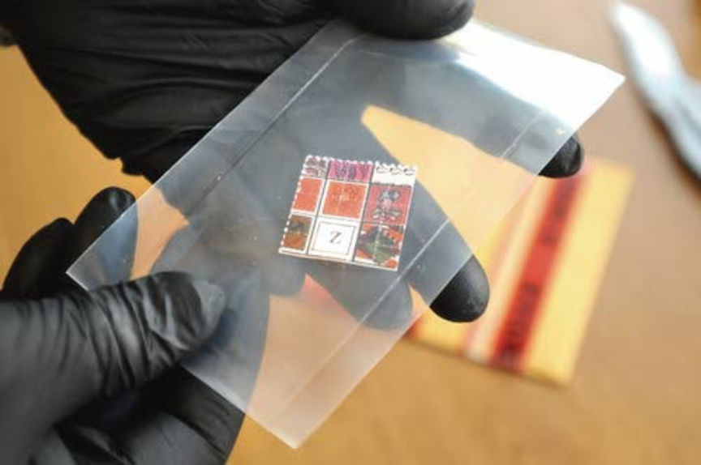
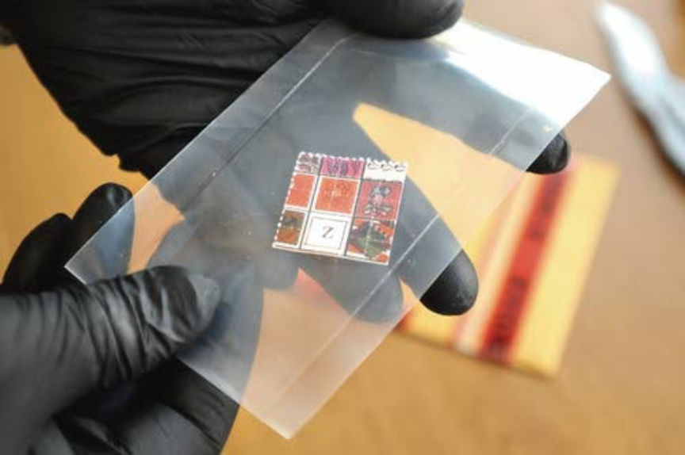

Feds Seized RaidForums
The United States Department of Justice announced the seizure of RaidForums, “a popular marketplace for cybercriminals to buy and sell hacked data.”
An ongoing investigation led by the FBI’s Washington Field Office and the U.S. Secret Service resulted in the seizure of the popular cybercrime forum RaidForums and the arrest of the alleged creator of the site, Diogo Santos Coelho. Police in the United Kingdom arrested Coelho on January 31, 2022.
A recently unsealed six-count indictment charged Coelho with conspiracy, access device fraud, and aggravated identify theft. The indictment accuses Coelho of creating and operating RaidForums from January 1, 2015, to January 31, 2022. On April 11, 2022, the Department of Justice announced the seizure of “Raidforums.com,” “Rf.ws,” and “Raid.lol.”
“RaidForums served as a major online marketplace for individuals to buy and sell hacked or stolen databases containing the sensitive personal and financial information of victims in the United States and elsewhere, including stolen bank routing and account numbers, credit card information, login credentials, and social security numbers. Before its seizure, RaidForums members used the platform to offer for sale hundreds of databases of stolen data containing more than 10 billion unique records for individuals residing in the United States and internationally.”

In addition to creating and administrating the site, Coelho allegedly sold hacked or stolen information to RaidForums users and operated a fee-based “Official Middleman” service. According to the indictment, “Coelho offered to accept cryptocurrency from the purchaser and files, including stolen access devices and means of identification, from the seller.” Coelho then ensured the buyer and seller were satisfied with the transaction and released the funds to the seller and the files or data to the customer.
During the investigation, law enforcement officers operating in an undercover capacity purchased social security numbers, email addresses, passwords, and bank routing and account numbers from sellers on RaidForums. Coelho interacted with undercover law enforcement officers on several occasions, including his alleged role as a middleman and seller. In one interaction described in the indictment, feds spent $4,000 in Bitcoin on 1.1 million “payment card account numbers, names, addresses, and phone numbers associated with the payment card account numbers” but received nothing in return.
“On or about December 16, 2018, COELHO, who was using the moniker “Downloading,” made a posting on the RaidForums website, which offered for sale 2.3 million payment card account numbers, including the names, addresses, and phone numbers associated with the payment card account numbers, which were purportedly obtained from a breach of records belonging to United States hotels.”
“On or about March 4, 2019, in the Eastern District of Virginia and elsewhere, COELHO, who was using the moniker “Downloading,” provided an undercover law enforcement officer with three stolen access devices, to wit, payment card account numbers, card verification values, expiration dates, and the names associated with the payment cards. COELHO agreed to this exchange to convince the undercover law enforcement officer that “Downloading” could be trusted to sell approximately 1.1 million stolen access devices in exchange for a Bitcoin amount that was equivalent to approximately $4,000 at the time.”
“On or about March 5, 2019, in the Eastern District of Virginia and elsewhere, Coelho, who was using the monikers “Downloading,” “Omnipotent,” and “Shiza,” arranged to both sell and serve as the middleman in the transaction to sell approximately 1.1 million stolen access devices to the undercover law enforcement officer. Coelho received a Bitcoin amount that was then equivalent to approximately $4,000; however, he did not provide the stolen access devices.”
In a different undercover transaction described in the indictment, the RaidForums user “SubVirt” listed 30 million records stolen from a major telecommunications company and wireless network operator. The records included “customer names, social security numbers, dates of birth, driver’s license numbers, phone numbers, billing account numbers, customer relationship manager information. Mobile Station Integrated Services Digital Network (MSISDN) information. International Mobile Subscriber Identity (IMSI) numbers, and International Mobile Equipment Identity (IMEI) numbers.” A third-party operating on behalf of the hacked telecom company then purchased the data, using Coelho’s middleman service.

The indictment also accuses Coelho of falsely registering a domain name.
“On or about June 6, 2018, Coelho, using the moniker “Omnipotent,” transferred the false registration of the domain “Raidforums.com” to a U.S.-based domain registrar based in Phoenix, Arizona using the alias “Kevin Maradona.” Coelho falsely registered the domain name knowing that it was used to support the RaidForums website in furtherance of the conspiracy.”
Several law enforcement agencies assisted the FBI and USSS in the investigation, including the Joint Cybercrime Action Taskforce (Europol), National Crime Agency, Swedish Police Authority, Romanian National Police, Judicial Police, Internal Revenue Service Criminal Investigation, and the Federal Criminal Police Office.
“Our interagency efforts to dismantle this sophisticated online platform – which facilitated a wide range of criminal activity – should come as a relief to the millions victimized by it, and as a warning to those cybercriminals who participated in these types of nefarious activities,” said Jessica D. Aber, U.S. Attorney for the Eastern District of Virginia. “Online anonymity was not able to protect the defendant in this case from prosecution, and it will not protect other online criminals either.”
Coelho is in custody in the U.K. pending the results of an extradition hearing.
archive.is/archive.org
indictment
An ongoing investigation led by the FBI’s Washington Field Office and the U.S. Secret Service resulted in the seizure of the popular cybercrime forum RaidForums and the arrest of the alleged creator of the site, Diogo Santos Coelho. Police in the United Kingdom arrested Coelho on January 31, 2022.
A recently unsealed six-count indictment charged Coelho with conspiracy, access device fraud, and aggravated identify theft. The indictment accuses Coelho of creating and operating RaidForums from January 1, 2015, to January 31, 2022. On April 11, 2022, the Department of Justice announced the seizure of “Raidforums.com,” “Rf.ws,” and “Raid.lol.”
“RaidForums served as a major online marketplace for individuals to buy and sell hacked or stolen databases containing the sensitive personal and financial information of victims in the United States and elsewhere, including stolen bank routing and account numbers, credit card information, login credentials, and social security numbers. Before its seizure, RaidForums members used the platform to offer for sale hundreds of databases of stolen data containing more than 10 billion unique records for individuals residing in the United States and internationally.”

The seizure banner visible at RaidForums.com
In addition to creating and administrating the site, Coelho allegedly sold hacked or stolen information to RaidForums users and operated a fee-based “Official Middleman” service. According to the indictment, “Coelho offered to accept cryptocurrency from the purchaser and files, including stolen access devices and means of identification, from the seller.” Coelho then ensured the buyer and seller were satisfied with the transaction and released the funds to the seller and the files or data to the customer.
During the investigation, law enforcement officers operating in an undercover capacity purchased social security numbers, email addresses, passwords, and bank routing and account numbers from sellers on RaidForums. Coelho interacted with undercover law enforcement officers on several occasions, including his alleged role as a middleman and seller. In one interaction described in the indictment, feds spent $4,000 in Bitcoin on 1.1 million “payment card account numbers, names, addresses, and phone numbers associated with the payment card account numbers” but received nothing in return.
“On or about December 16, 2018, COELHO, who was using the moniker “Downloading,” made a posting on the RaidForums website, which offered for sale 2.3 million payment card account numbers, including the names, addresses, and phone numbers associated with the payment card account numbers, which were purportedly obtained from a breach of records belonging to United States hotels.”
“On or about March 4, 2019, in the Eastern District of Virginia and elsewhere, COELHO, who was using the moniker “Downloading,” provided an undercover law enforcement officer with three stolen access devices, to wit, payment card account numbers, card verification values, expiration dates, and the names associated with the payment cards. COELHO agreed to this exchange to convince the undercover law enforcement officer that “Downloading” could be trusted to sell approximately 1.1 million stolen access devices in exchange for a Bitcoin amount that was equivalent to approximately $4,000 at the time.”
“On or about March 5, 2019, in the Eastern District of Virginia and elsewhere, Coelho, who was using the monikers “Downloading,” “Omnipotent,” and “Shiza,” arranged to both sell and serve as the middleman in the transaction to sell approximately 1.1 million stolen access devices to the undercover law enforcement officer. Coelho received a Bitcoin amount that was then equivalent to approximately $4,000; however, he did not provide the stolen access devices.”
In a different undercover transaction described in the indictment, the RaidForums user “SubVirt” listed 30 million records stolen from a major telecommunications company and wireless network operator. The records included “customer names, social security numbers, dates of birth, driver’s license numbers, phone numbers, billing account numbers, customer relationship manager information. Mobile Station Integrated Services Digital Network (MSISDN) information. International Mobile Subscriber Identity (IMSI) numbers, and International Mobile Equipment Identity (IMEI) numbers.” A third-party operating on behalf of the hacked telecom company then purchased the data, using Coelho’s middleman service.
RaidForums before the raid.
The indictment also accuses Coelho of falsely registering a domain name.
“On or about June 6, 2018, Coelho, using the moniker “Omnipotent,” transferred the false registration of the domain “Raidforums.com” to a U.S.-based domain registrar based in Phoenix, Arizona using the alias “Kevin Maradona.” Coelho falsely registered the domain name knowing that it was used to support the RaidForums website in furtherance of the conspiracy.”
Several law enforcement agencies assisted the FBI and USSS in the investigation, including the Joint Cybercrime Action Taskforce (Europol), National Crime Agency, Swedish Police Authority, Romanian National Police, Judicial Police, Internal Revenue Service Criminal Investigation, and the Federal Criminal Police Office.
“Our interagency efforts to dismantle this sophisticated online platform – which facilitated a wide range of criminal activity – should come as a relief to the millions victimized by it, and as a warning to those cybercriminals who participated in these types of nefarious activities,” said Jessica D. Aber, U.S. Attorney for the Eastern District of Virginia. “Online anonymity was not able to protect the defendant in this case from prosecution, and it will not protect other online criminals either.”
Coelho is in custody in the U.K. pending the results of an extradition hearing.
archive.is/archive.org
indictment